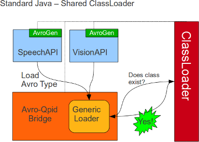
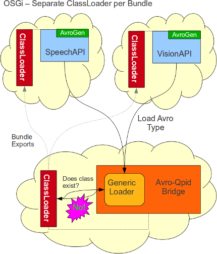
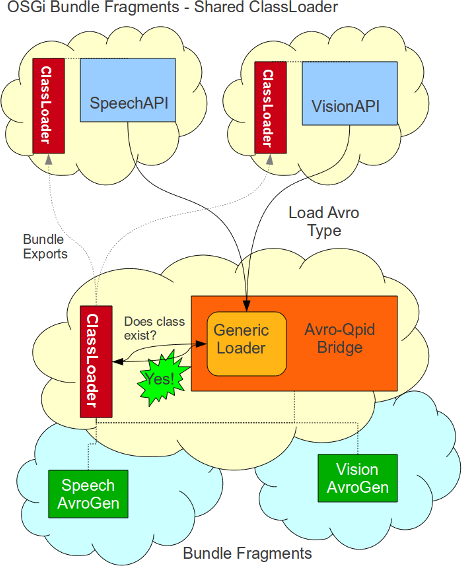

In my
last post I demonstrated how you can use Apache Avro as a serialization mechanism for a distributed messaging system
Avro allows you to define classes in Json , and can serialize against that Json schema.
In Java (and other static-typed languages), Avro allows you to generate language specific implementations of the json classes. Generated avro classes are called SpecificRecords as opposed to GenericRecords which are created at runtime from a schema. Using SpecificRecords is preffered as it improves performance and gives us type-safety.
In the last post we only looked at using Avro within the context of a standard Java project, which worked without any problems. However, the MechIO project runs within a Felix OSGi container instead of running directly on the JVM as a standard project.
This post shows a ClassLoader/Dependency issue with using Avro in multiple OSGi bundles, and how to fix it.
This diagram shows the configuration in a standard Java project, where a shared ClassLoader is used.
You have the SpeechAPI and VisionAPI libraries, which each have their own packages of generated Avro classes (AvroGen).
The AvroQpid library has a Generic Loader method for deserializing generated Avro classes.
The SpeechAPI and VisionAPI make a call AvroQpid to deserialize a record.
Avro pulls the Class name from the Schema and uses the ClassLoader to find the Class.
The Class is used to get the default constructor and create a new instance to populate.

Object creation time is found to be the slowest part of Avro. In most cases you can avoid some of this cost by providing an instance to be populated. However, when deserializing a complex type, all inner classes, arrays, or maps will be created from the ClassLoader.
This diagram shows each library wrapped up in separate OSGi bundles. The bundles are configured the same as the standard Java project. As you can see, each OSGi bundle uses its own ClassLoader. Classes from bundle X are available to bundle Y when bundle X exports their package and bundle Y imports it.
By default, with the maven-bundle-plugin, a bundle will import all the packages exported bundles visible at compile time. Additional imports can be declared, and will be resolved at runtime.

Here we can see the AvroQpid library exporting a package containing the Generic Loader, and the SpeechAPI and VisionAPI libraries importing it.
However, when the method is used, Avro fails to retreive the Class from the ClassLoader.
Since the class is missing, Avro resorts to populating a GenericRecord which cannot be cast to our generated type.
The generic method fails with this approach.
The solution would be to move the AvroGen packages into separate bundles, then they could be safely imported by both the API and AvroQpid bundles. The problem with this approach is that it forces us to declare the AvroGen packages as imports in the AvroQpid manifest. We need an approach that will allow packages to be added to the AvroQpid ClassLoader without changing the AvroQpid library.
What we need are Bunadle Fragments.
A bundle fragment attaches itself to a host bundle and shares its ClassLoader, making available all its exported packages.
A fragment declares its host bundle in the manifest, and attaches itself without the host knowing.
This allows us to move our AvroGen packages in bundle fragments attached to the AvroQpid bundle.
Specify that a bundle is a fragment by adding the Fragment-Host: line to the manifest.
In our pom.xml we can add <Fragment-Host>org.mechio.AvroQpidBridge</Fragment-Host>
When we add this to the pom.xml of our AvroGen project, when the bundle is loaded it will attach itself to the AvroQpidBridge bundle instead of running an activator.

Now when we export the AvroGen packages from the fragments, the classes are injected into AvroQpid bundle ClassLoader automatically. Since our AvroGen project is a dependency of the API project, the maven-bundle-plugin will automatically import the AvroGen packages. This way, we can add and remove generated types from the AvroQpid ClassLoader automatically.